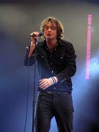

Tom Chaplin, hijo de David Chaplin y Sally Taylor, comienza sus estudios en la Vinehall School (Robert Sbridge, East Sussex) y los continúa en el internado británico Tonbridge School (Tonbridge, Kent). Al finalizarlos, en 1997. Es el vocalista de la banda
Tim Rice-Oxley nació el 2 de junio de 1976 en Oxford, Inglaterra, hijo de Margaret y Charles Patrick Rice-Oxley. Asistió a la Escuela Tonbridge junto a sus mejores amigos y quienes serían futuros integrantes de Keane, Richard Hughes y Tom Chaplin.
Richard pasó gran parte de su infancia-adolescencia en Battle, donde conoció a Tim cuando tenía alrededor de 2 años. Pero fue cuando tenía 10 cuando se volvieron realmente amigos, después de que Tim le propinara algunos golpes a Richard a la salida del colegio, en una riña infantil.
Jesse nació el Bedford el 3 de septiembre de 1981. Su talento musical le viene también de familia, ya que su madre es una muy talentosa cantante de folk, Charity Quin. Jesse empezó su vida musical desde muy pequeño.